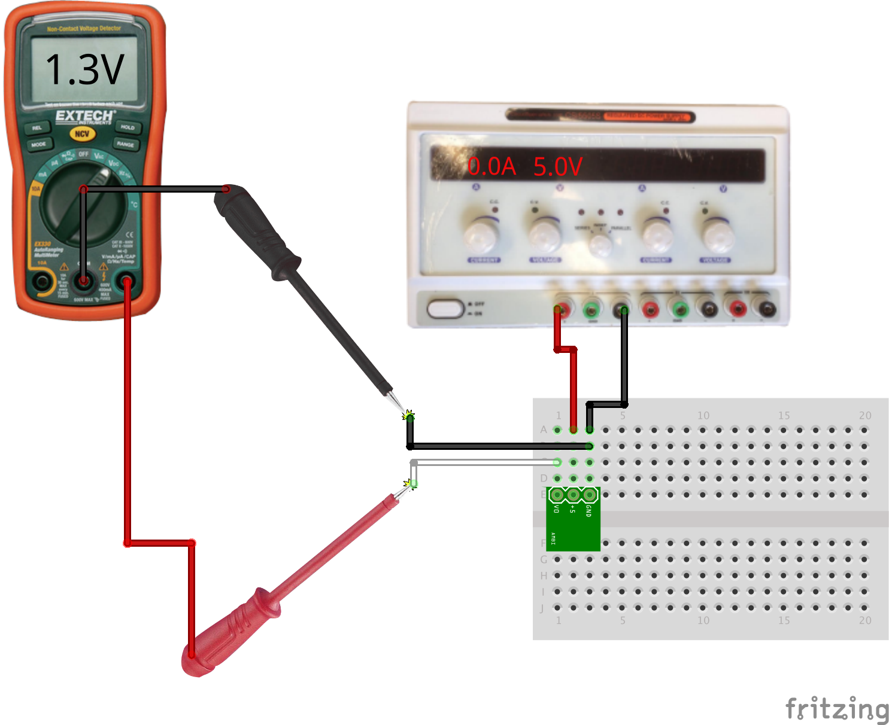
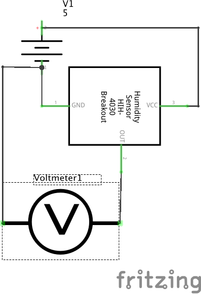

Measure the response of a modular sensor.
Many sensors are available as convenient modules which incorporate the required support components. In this example, the module simply requires regulated power to directly output an analog voltage representing a physical property.
A buffered or amplified module can drive a modest current through the output if needed; it has a low-impedance output. Many unbuffered or unamplified sensors only output a small current or voltage and require an amplifier to bring the signal to a usable level.
When in doubt, consult the datasheet or spec sheet for the module for specific ratings on supply voltage and details of the output signal.
 